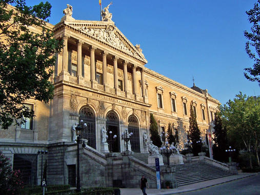
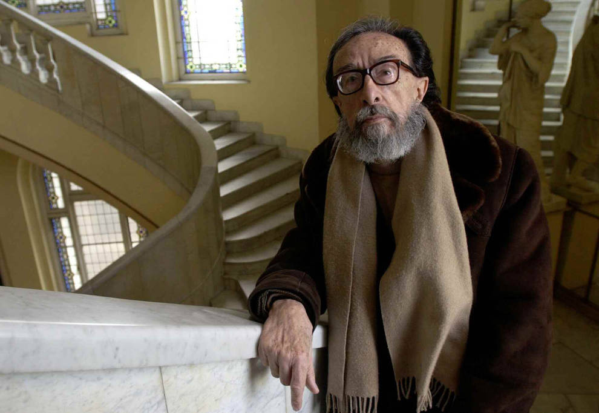

|
La Biblioteca Nacional enlaza sus datos La Biblioteca Nacional se suma al reto de publicar los catálogos bibliográficos y de autoridades en formato RDF (Resource Description Framework) conforme a los principios de los datos enlazados para para mostrar, intercambiar y conectar información. De esta manera, con el portal datos.bne.es, España se adhiere a las iniciativas de otras bibliotecas como las de Reino Unido y Alemania. El concepto de Linked Data o datos enlazados fue introducido por Tim Berners-Lee dentro del marco de la web semántica. El objetivo del proyecto Linking Open Data desarrollado por el grupo de la W3C es ampliar la web mediante la publicación de bases de datos en RDF y mediante el establecimiento de enlaces entre datos de diferentes fuentes. El proyecto Datos enlazados en bibliotecas consiste en la transformación y publicación de los catálogos bibliográfico y de autoridades de la BNE en RDF, utilizando las ontologías o vocabularios estándares de la Federación Internacional de Asociaciones de Bibliotecas (IFLA), para que los datos sean accesibles en la web semántica y enlazarlos con otros conjuntos de datos de la nube como el Fichero de Autoridades Virtual Internacional (VIAF), y en un futuro próximo, con DBpedia. Para poder representar los recursos en RDF, se han utilizado ontologías o modelos consensuados por la comunidad de bibliotecas y propuestos por IFLA, la Federación Internacional de Asociaciones de Bibliotecarios y Bibliotecas. El portal datos.bne.es representa una de las primeras iniciativas a nivel internacional en hacer un uso intensivo de los modelos propuestos por IFLA, como el estándar internacional para descripción bibliográfica ISBD, o el modelo de requisitos funcionales para registros bibliográficos FRBR, cuyo propósito es proporcionar una forma estandarizada de describir datos bibliográficos que permita el intercambio de registros a nivel internacional. Dado que los modelos de IFLA están en inglés, se ha realizado un proceso de traducción para generar la terminología en español. En la transformación de los aproximadamente siete millones de registros almacenados en formato MARC 21 en los catálogos bibliográficos y de autoridades de la BNE, se ha utilizado la herramienta MARiMbA. La herramienta permite utilizar cualquier vocabulario (en este caso ISBD y FRBR) y simplifica el proceso de asignación de correspondencias entre los vocabularios elegidos y MARC 21. Como resultado de este proceso se han generado alrededor de treinta millones de tripletas en español con datos de gran calidad y valor cultural, incrementando sustancialmente la presencia del idioma español en la nube de datos. Una vez se han descritos los datos con los modelos de IFLA y se han generado los catálogos bibliográficos y de autoridades en RDF, el siguiente paso ha sido conectar estos datos con otras bases de conocimiento existentes en RDF dentro en la iniciativa de datos abiertos enlazados. Así, los datos de la BNE se encuentran enlazados o conectados con otros datos procedentes de fuentes de datos internacionales a través de VIAF, el fichero de autoridades virtual internacional. |
|
Juan Eduardo Zúñiga, Premio Nacional de las Letras Españolas 2016 El escritor Juan Eduardo Zúñiga ha sido galardonado hoy con el Premio Nacional de las Letras Españolas 2016. El Premio lo concede el Ministerio de Educación, Cultura y Deporte para distinguir el conjunto de la labor literaria de un autor español cuya obra esté considerada como parte integrante del conjunto de la literatura española actual escrita en cualquiera de las lenguas españolas. Está dotado con 40.000 euros. El jurado ha reconocido a Juan Eduardo Zúñiga, por “una vida dedicada a las letras en las que ha sido un maestro tanto en el género del cuento, realista y fantástico, como en el ensayo literario y la traducción”. Zúñiga (Madrid, 1929) cursó estudios de Bellas Artes y Filosofía y Letras, y se especializó en literaturas eslavas y en el siglo XIX español. Ha editado numerosos estudios y ensayos como especialista en literaturas eslavas, principalmente la rusa y la búlgara. Entre sus obras destaca una biografía de Turgueniev titulada Los imposibles afectos de Ivan Turgueniev (1977), varios ensayos sobre escritores rusos como Chéjov y numerosos artículos acerca de la cultura búlgara. Zúñiga elaboró en 1945 su primer ensayo titulado La historia de Bulgaria. También ha traducido a importantes novelistas y poetas de los países del Este, y a autores portugueses, entre los que destacan Urbano Tavares Rodrigues o Mario Dionisio. En 1987 el Premio Nacional de Traducción por la versión castellana de las obras del escritor portugués Antero de Quental. En 1951 editó su primera novela, Inútiles totales, y más tarde, en 1962, publicó El coral y las aguas. En 1967 escribió el ensayo Los artículos sociales de Mariano José de Larra, y en 1980, publicó el libro de relatos Largo noviembre de Madrid, basado en la situación de la capital española en plena Guerra Civil. En 1983 publicó El anillo de Pushkin, libro considerado a la vez relato y ensayo. Ha escrito también La tierra será un paraíso (1986), segunda entrega de la trilogía sobre Madrid y la Guerra Civil; Misterios de las noches y los días (1992), compuesto por cuarenta relatos breves; la novela Flores de plomo (1999), una crónica basada en datos históricos de la noche en la que Mariano José de Larra se suicidó. En 2003 finalizó su trilogía sobre Madrid y la Guerra Civil con la obra Capital de la gloria, un decálogo de relatos ambientados en los últimos días del Madrid republicano, con la que obtuvo el Premio de la Crítica de Narrativa en castellano y el Premio Salambó. En 2010 publica Brillan monedas oxidadas, una recopilación de relatos. Ha estado presidido por el director general de Industrias Culturales y del Libro, José Pascual Marco; y la subdirectora general de Promoción del Libro, la Lectura y las Letras Españolas, Mónica Fernández, ha actuado como vicepresidenta. Han formado parte del jurado como vocales el autor galardonado en la edición 2014, Emilio Lledó; la autora galardonada en la edición 2015, Carme Riera; Pedro Álvarez de Miranda, designado por la Real Academia Española; Xesús Alonso, por la Real Academia Gallega; Aizpea Goenaga, por la Real Academia de la Lengua Vasca; Jordi Cornudella, por el Instituto de Estudios Catalanes; Manuel Rico, por la Asociación Colegial de Escritores de España (ACE); Anna Grau, por la Federación de Asociaciones de Periodistas de España (FAPE); Fernando Valls, por la Asociación Española de Críticos Literarios; Paloma García Picazo, por el Centro de Estudios de Género de la UNED; Rafael Luis González, por la Conferencia de Rectores de las Universidades Españolas (CRUE), y Fernando Rodríguez Lafuente, por el ministro de Educación, Cultura y Deporte. |